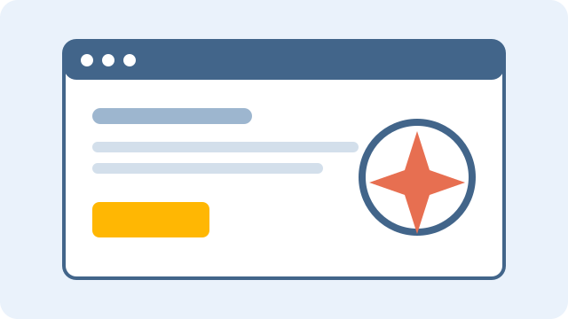
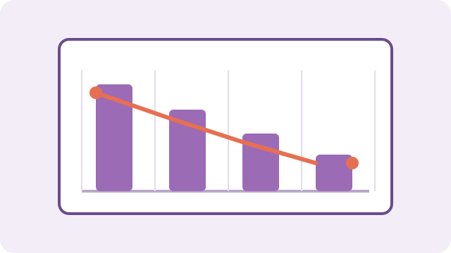

Ahoj, jsem potok.
Studuji informační technologie a zajímá mě web, který funguje pro každého – na telefonu i na velkém monitoru, s myší i jen s klávesnicí.
O mně
Jsem student střední školy a ve volném čase stavím malé weby a nástroje. Nejvíc mě baví převádět složité věci na jednoduché rozhraní, které zvládne i člověk se čtečkou obrazovky nebo s nastavením, které se liší od mého.
Když zrovna nekoukám do editoru, chodím do přírody, fotím ji a zapisuji si pozorování. Sedm let se věnuji skautingu, kde se učím zodpovědnosti a týmové práci.
„Pozornost je nejvzácnější a nejčistší forma velkorysosti.“
Simone Weil
Projekty a zájmy
Vybral jsem tři věci, které jsem udělal a které mě dodnes baví.
-

Rozcestník pro začátečníky
Přehled studijních materiálů, který jsem udělal pro spolužáky. Každý odkaz má výstižný popis a celý seznam jde projet klávesnicí.
-

Zápisník přírody
Jednoduchá aplikace pro zaznamenávání pozorování z procházek. Zkouším na ní pracovat s daty, obrázky a s tím, aby se dala používat i v terénu.
-

Kalkulačka dopadu
Školní projekt, který spočítá orientační uhlíkovou stopu docházky do školy. Výsledky jsou textové, nejen barevné, aby byly čitelné pro každého.
Dovednosti
Přehled toho, co umím a kde to zatím jen zkouším.
| Dovednost | Úroveň | Kde ji používám |
|---|---|---|
| HTML a sémantika | Pokročilý | Struktura všech mých webů |
| CSS a responzivní layout | Pokročilý | Přizpůsobení telefonům i velkým obrazovkám |
| Git a GitHub | Základy | Práce ve větvích a pull requestech |
| JavaScript | Základy | Jednoduché interakce v projektech |
| Přístupnost (WCAG) | Základy | Kontrola kontrastu, klávesnice a čtečky obrazovky |
Kontakt
Napište mi, máte-li otázku k projektu nebo jen chcete říct, že vám stránka udělala radost.
- E-mail: potok@spsejecna.cz
- GitHub: github.com/potok